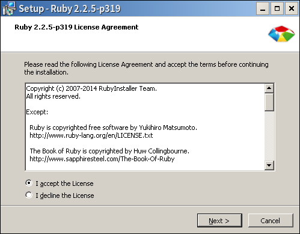

程式設計基礎
林品儒
2016/09/30
本日重點
基本概念
hello, world
基礎型別
四則運算
基本概念
程式
以特定指令使電腦運行想要的動作
可以以程式語言編寫
用電腦可以解讀的語言命令之
程式語言
利用標準化的指令定義電腦的行動
但是比電腦更早被發明出來
自動織布機、自動演奏鋼琴
早期的語言
底下是x86格式的機械語言和組合語言
8d 74 26 00 lea 0x0(%esi,%eiz,1),%esi
8b 54 24 28 mov 0x28(%esp),%edx
89 44 24 04 mov %eax,0x4(%esp)
8b 44 24 20 mov 0x20(%esp),%eax
89 54 24 08 mov %edx,0x8(%esp)
89 04 24 mov %eax,(%esp)
e8 38 06 00 00 call 6b902250 <___mingw_TLScallback>
b8 01 00 00 00 mov $0x1,%eax
83 c4 1c add $0x1c,%esp
c2 0c 00 ret $0xc
這堂課不會教這個想學另洽
程式執行
直譯式語言
編譯式語言
位元碼直譯
即時編譯
直譯式語言
邊解讀文字邊執行
人類可以直接閱讀可執行的程式
效能一般較差
編譯式語言
寫好文字檔後轉換成原生機械碼
電腦能直接執行但人類不容易看
效能一般較佳
位元碼直譯
先將文字檔轉換成特殊的位元碼
再用程式直譯該編碼
先編譯後直譯
效能介於兩者之間
即時編譯
JIT
可以用位元碼產生原生的機械碼
融合了各種特點
Ruby
在1.9以前是完全直譯
在1.9開始使用VM執行位元碼
不過還是歸類為直譯
未來會引入JIT技術
hello, world
直譯器
為了執行Ruby的程式我們需要直譯器
Windows: RubyInstaller
Mac:$ brew install ruby
Linux:各家安裝ruby套件即可
版本選擇
推薦使用2.0以上的版本
有一定的了解再使用x64版本
就用Ruby2.2.5吧
安裝說明
為防止有個萬一還是說明安裝流程
其實就是Enter大法
選擇安裝語言

只有英文和日文可以選
就選英文吧
同意許可證
Ruby為自由軟體就安心同意吧
額外選項

第一個可以不用
但是PATH和檔案關聯建議打開

等它安裝
安裝完成

接下來就可以使用了
使用Ruby
Start Command Prompt with Ruby
Interactive Ruby
執行檔案
要對電腦路徑稍微熟悉
基本的CMD/TTY操作要會
先不要用這個
互動模式
使用irb為工具
輸入程式後就會產生結果
可以專心在語言的熟悉上